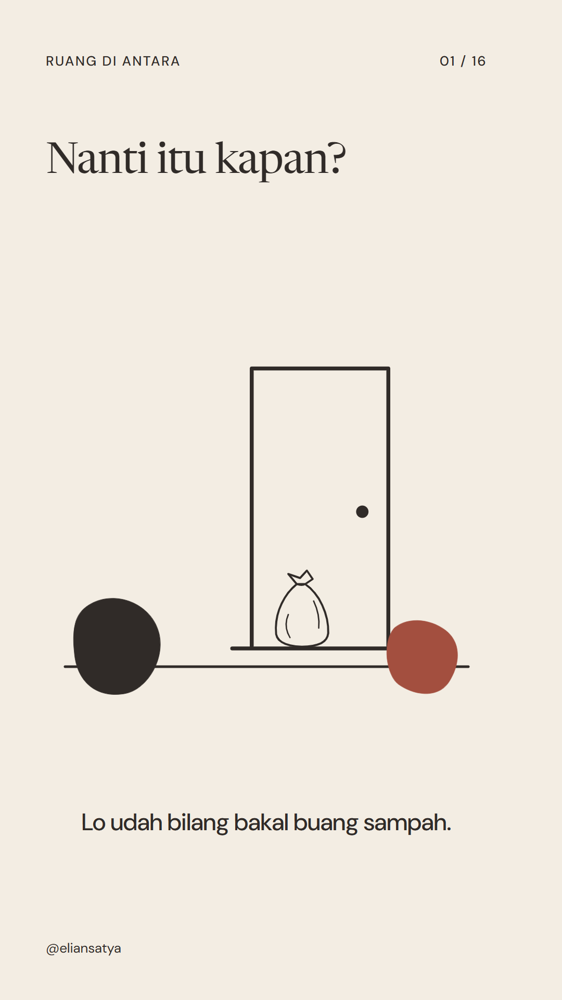
Lo udah bilang bakal buang sampah. Malamnya, kantong itu masih di depan pintu. Niatnya berhenti di mana?
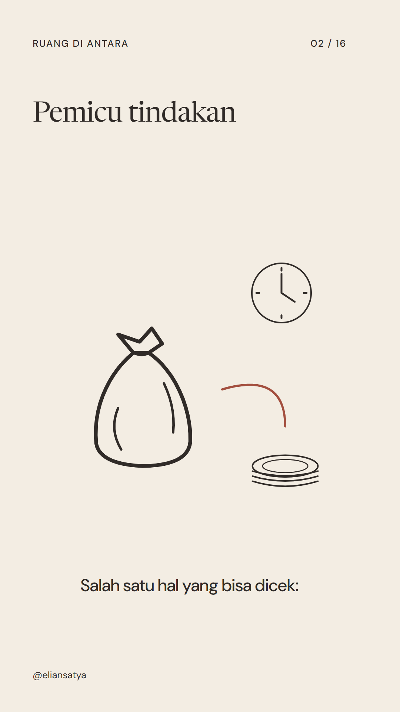
Salah satu hal yang bisa dicek: rencana lo udah punya pemicu tindakan belum?
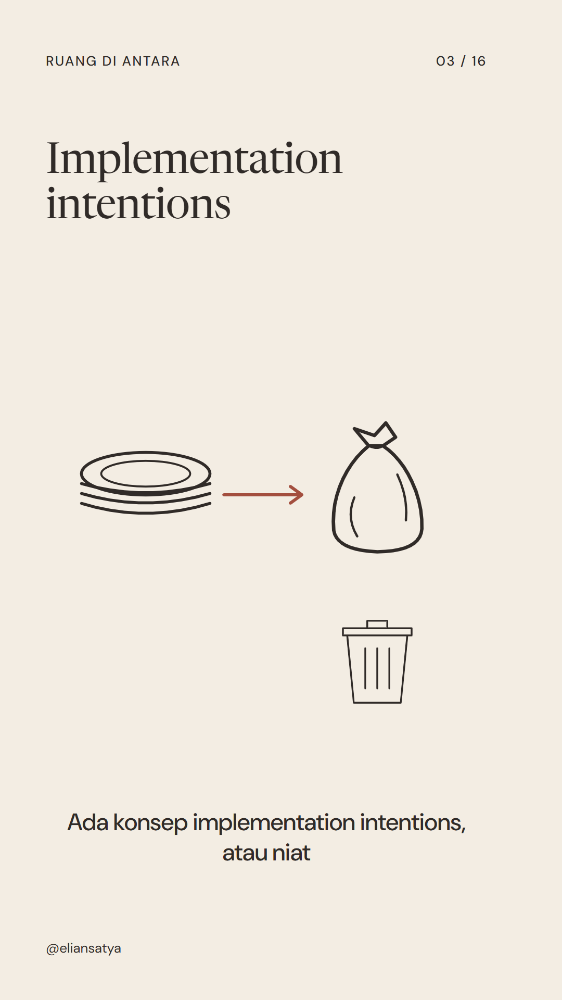
Ada konsep implementation intentions, atau niat implementasi: mengaitkan situasi tertentu dengan tindakan yang akan dilakukan.
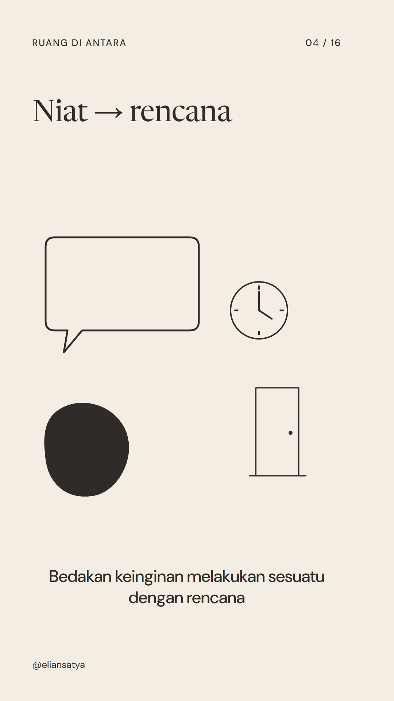
Bedakan keinginan melakukan sesuatu dengan rencana kapan, di mana, dan bagaimana lo mulai.
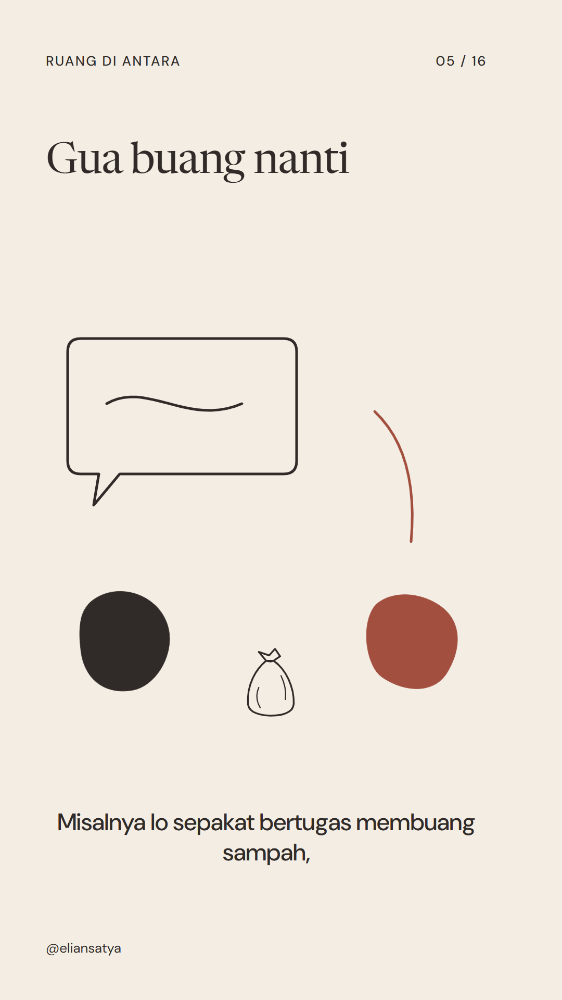
Misalnya lo sepakat bertugas membuang sampah, tapi cuma bilang: Gua buang nanti.
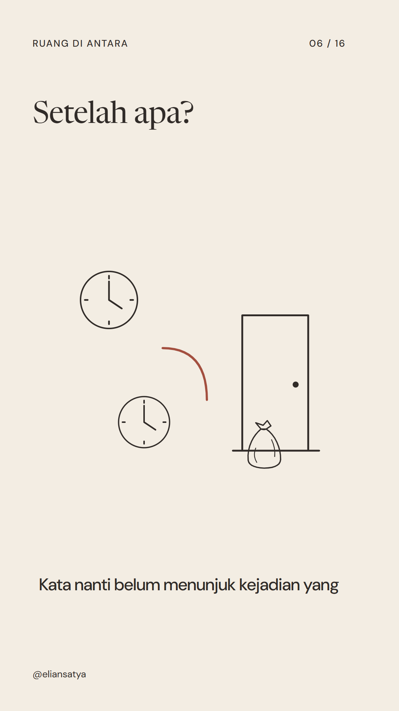
Kata nanti belum menunjuk kejadian yang akan jadi tanda buat lo bergerak.
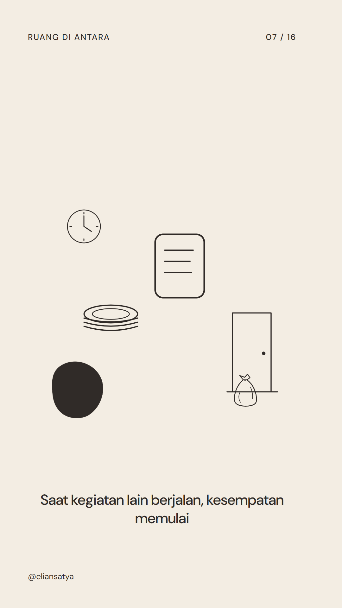
Saat kegiatan lain berjalan, kesempatan memulai bisa kelewat. Ada celah antara niat dan tindakan.
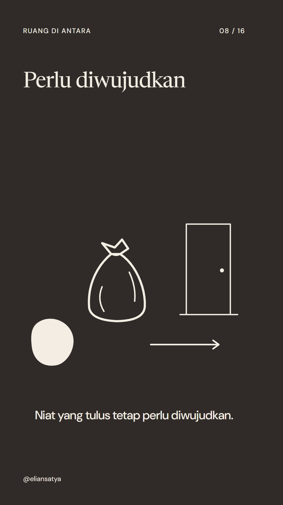
Niat yang tulus tetap perlu diwujudkan.
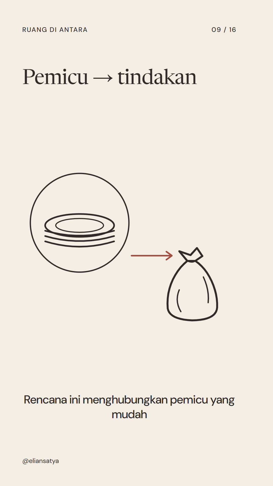
Rencana ini menghubungkan pemicu yang mudah dikenali dengan respons yang spesifik.
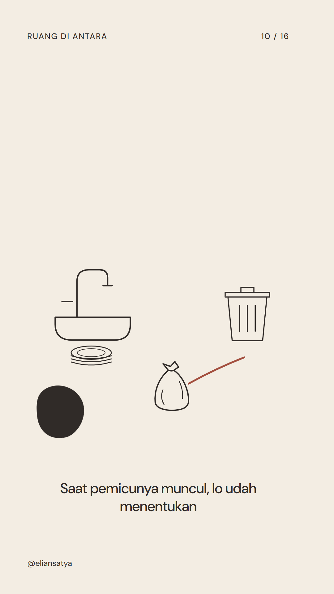
Saat pemicunya muncul, lo udah menentukan langkah berikutnya, tanpa memutuskan semuanya dari awal.
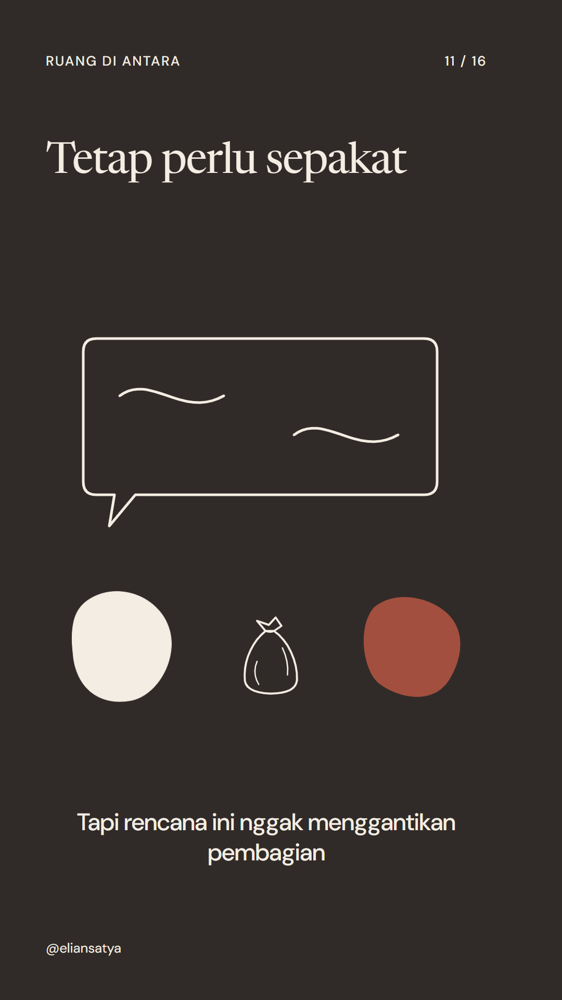
Tapi rencana ini nggak menggantikan pembagian tugas yang adil atau kesediaan lo menjalankannya.
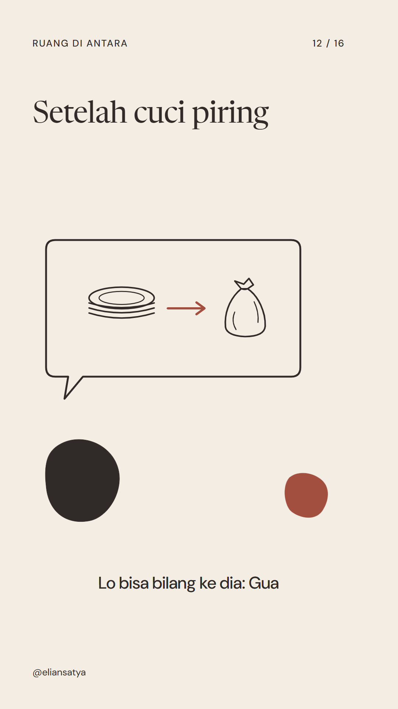
Lo bisa bilang ke dia: Gua yang buang sampah. Setelah cuci piring malam ini, gua bawa kantongnya ke tempat sampah luar.
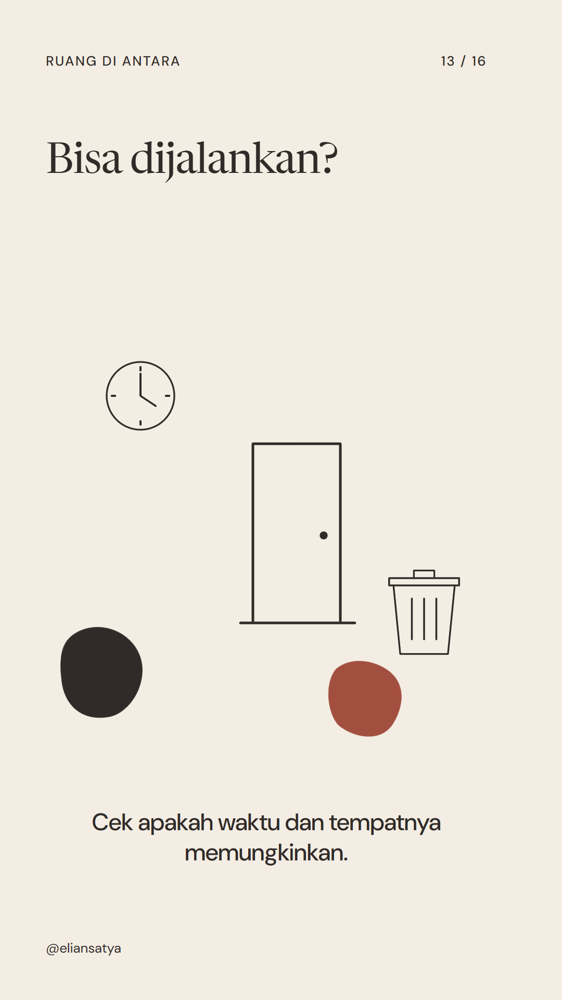
Cek apakah waktu dan tempatnya memungkinkan. Kalau ada hambatan, ubah rencananya bersama.
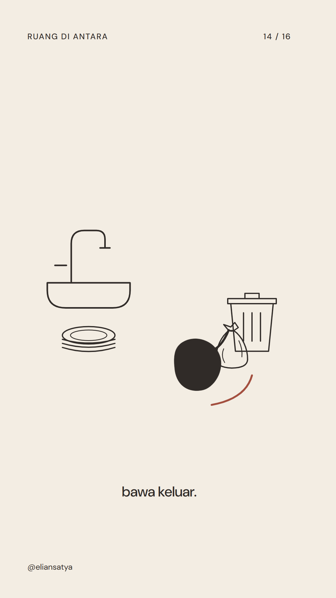
Begitu piring terakhir selesai dicuci, lo ambil kantongnya, lalu bawa keluar.
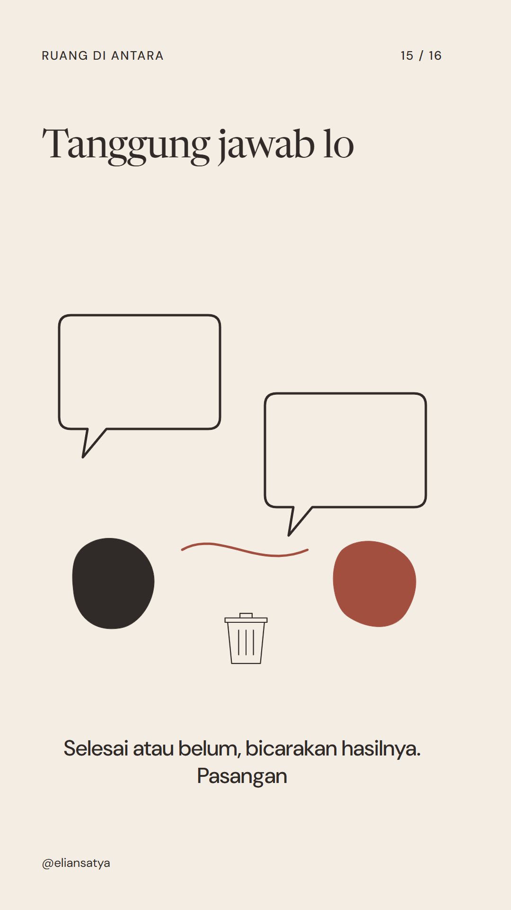
Selesai atau belum, bicarakan hasilnya. Pasangan lo nggak otomatis menjadi pengingat pribadi.
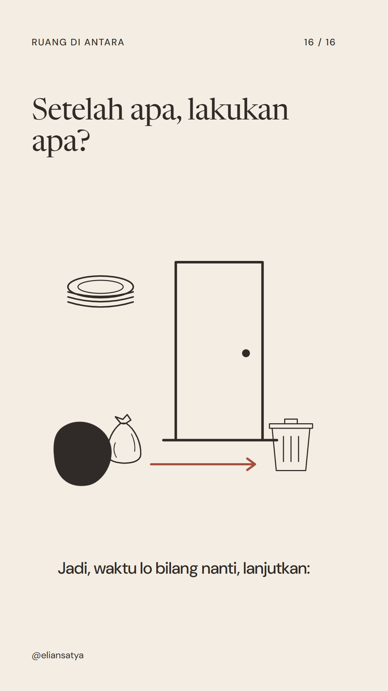
Jadi, waktu lo bilang nanti, lanjutkan: setelah kejadian apa, lo mulai melakukan apa?